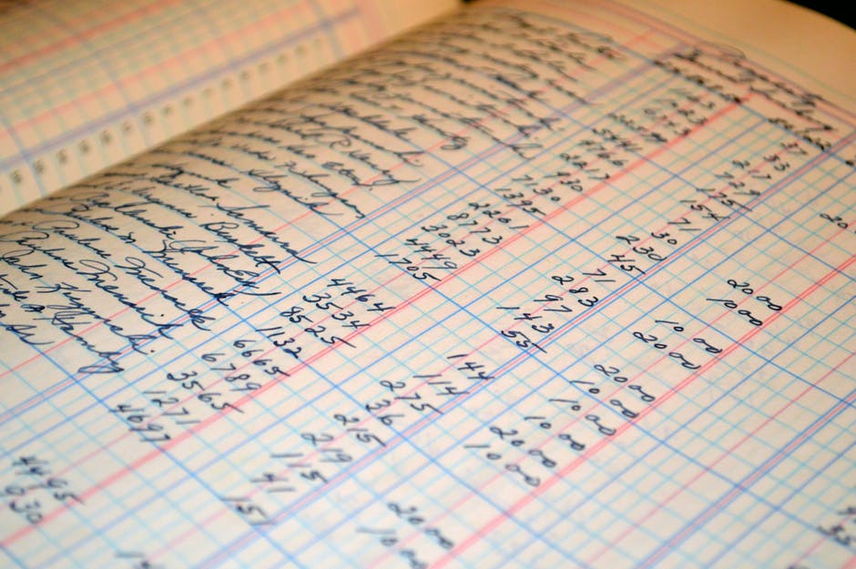

Hep Oils can supply the containers required to collect waste cooking oil. These come in a variety of sizes to suit your needs. We will supply as many as is required. These are taken away and clean (sterilised) containers left at the same time.
Collection is fast and at times best for you. This can be adjusted to be more or less frequent, if over time you find it does not suit your requirements. Just give us a ring and our friendly customer service team will arrange new times.

We provide you with an invoice containing your delivery details and duty of care information. So you can prove that the waste has been collected by registered collectors and disposed of correctly.